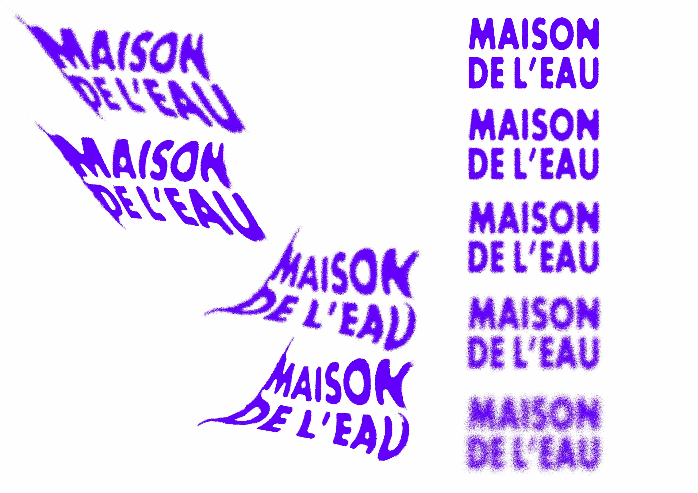
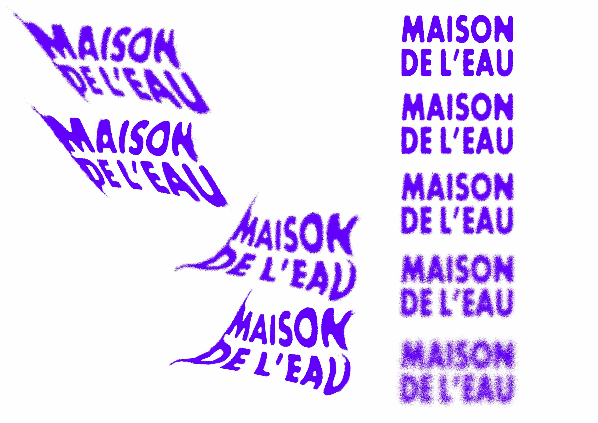

FICTITIOUS VISUAL IDENTITY - MAISON DE L'EAU
A visual identity that can be applied to signage
A play of movement with the fluidity of water broken by the rough appearance of the machines.
Inspirations : Robert Beatty, Studio North (Tate Liverpool)


 
